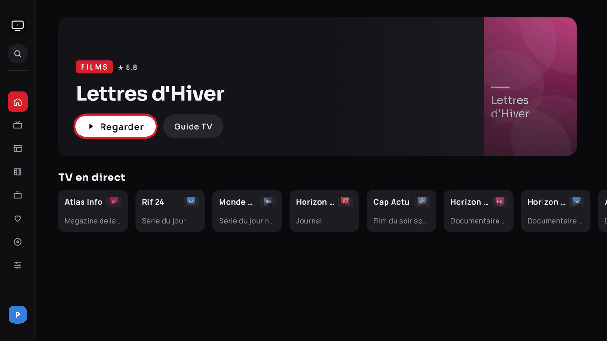
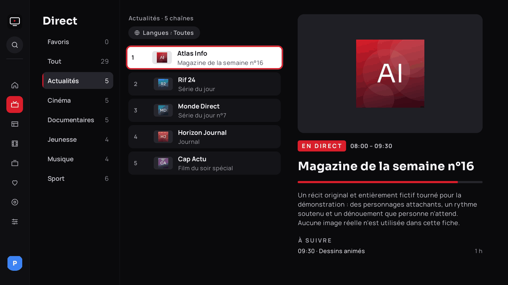
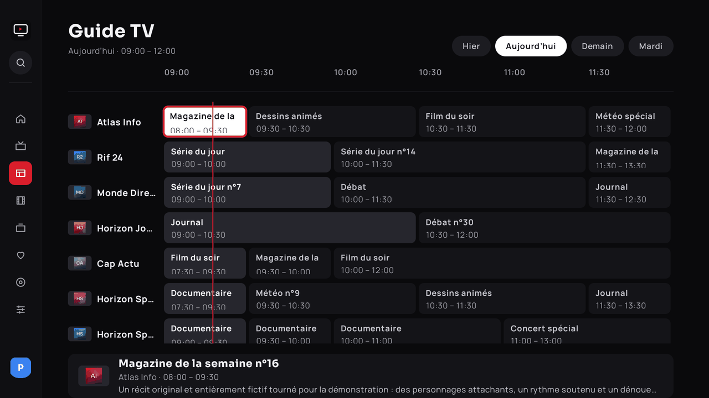
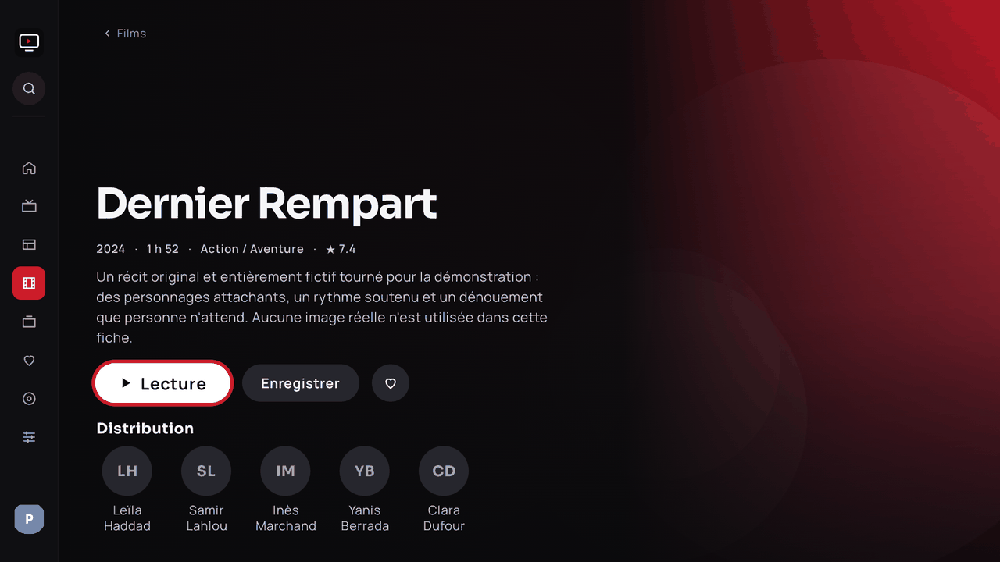
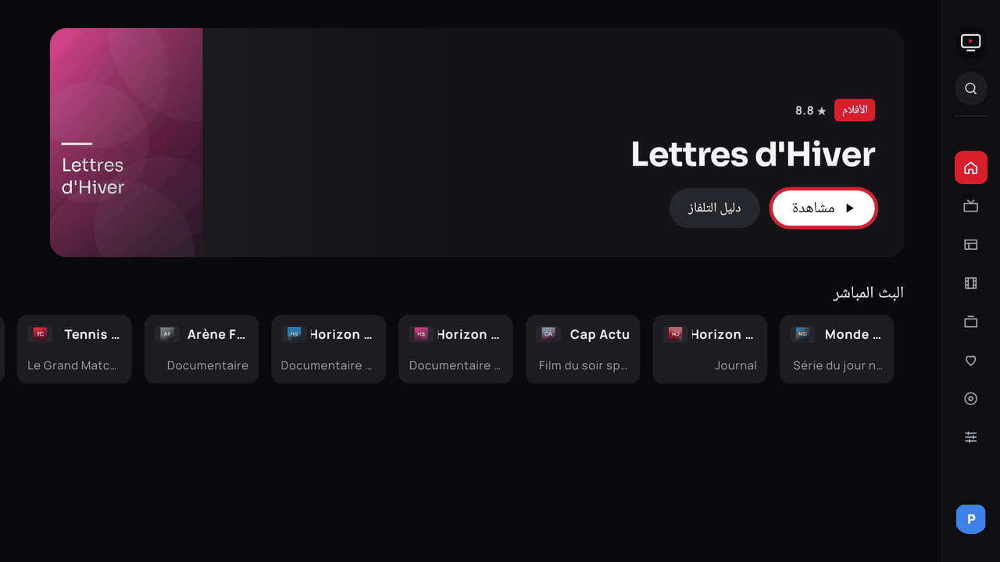
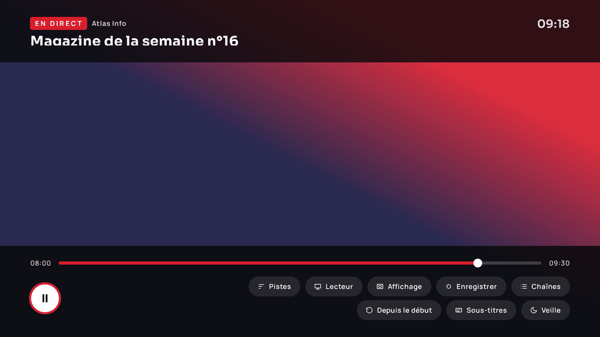

Android TV · Google TV
Toute votre télé, dans une seule application.
Ultra TV est un lecteur IPTV natif, pensé pour la télécommande : chaînes, films, séries, guide des programmes, replay et pause du direct. Il se règle tout seul selon votre appareil et votre réseau.

Ce que fait Ultra TV
Direct fluide, même avec des dizaines de milliers de chaînes
Catégories actives, filtre par langue dès la première source, badges de qualité, zapping par numéro, chaînes récentes, recherche instantanée, et Recherche depuis n'importe quel écran (bouton en haut du menu latéral, touches Recherche et micro de la télécommande).

Guide, replay et rappels
Grille horaire, replay depuis le guide quand la source le permet, rappels et enregistrements programmés, pause du direct par tampon disque.

Fiches riches, sous-titres, profils
Affiches, synopsis et distribution via TMDB, sous-titres en ligne et style réglable, profils dont un profil Enfants, intégration Google TV (Watch Next, recherche vocale).

Quatre langues, dont l'arabe en miroir
Interface en français, anglais, espagnol et arabe (de droite à gauche), au choix dans Réglages › Langues, indépendamment de la langue de l'appareil.

Deux moteurs de lecture
ExoPlayer (Media3) et VLC, avec repli automatique d'un moteur ou d'un décodeur à l'autre si une chaîne ne démarre pas. Tampon, qualité et décodage se règlent seuls selon la box ; tout reste modifiable.

Thèmes
Sombre, clair ou automatique. Le lecteur reste toujours sombre.
Sécurité
Identifiants chiffrés sur l'appareil, aucune adresse de flux affichée, appairage au cloud par code.
Veille et confort
Minuterie 30 / 60 / 90 min ou fin de programme, reprise de lecture, mise à jour intégrée.
Télécharger
APK 1.1.0
Android 9 ou plus récent. Le fichier suit toujours la dernière version publiée.
Downloader
Sur une box sans navigateur : ouvrez l'application Downloader, saisissez le code puis validez.
5248504
Installer et configurer
Sur la box
- Autorisez l'installation d'applications inconnues pour Downloader (Réglages › Sécurité).
- Téléchargez l'APK avec le code ci-dessus, puis installez-le.
- Au premier lancement, choisissez le type de source (Xtream Codes, lien M3U, fichier M3U ou Depuis le cloud), saisissez-la, puis cochez vos langues : seules les catégories correspondantes sont téléchargées.
Avec adb
adb connect IP_DE_LA_BOX:5555
adb install -r UltraTV-debug.apkSynchronisation cloud
Pour éviter de saisir des identifiants à la télécommande, gérez vos sources depuis un navigateur sur ultratv-config.khalilbenaz.workers.dev (l'adresse est aussi affichée avec un QR code dans l'application, Réglages › Sources).
- Créez un compte sur le tableau de bord et ajoutez vos sources.
- Choisissez « Appairer une TV ».
- Sur la box : « Depuis le cloud » (assistant) ou Réglages › Sources › Synchroniser depuis le cloud. Saisissez dans le tableau de bord le code à 8 caractères affiché sur la télévision.
Vos identifiants sont chiffrés côté serveur ; la box reçoit un jeton propre, révocable depuis le tableau de bord. Vous pouvez aussi déployer votre propre Worker (instructions et secrets à définir dans le dépôt, aucune valeur publiée).
FAQ
Ultra TV fournit-il des chaînes ?
Non. C'est un lecteur : vous apportez votre abonnement ou vos listes, que vous avez le droit d'utiliser.
Mes identifiants sont-ils protégés ?
Ils sont chiffrés sur l'appareil, ne sont jamais affichés ni journalisés, et les adresses de flux ne s'affichent nulle part.
Quelles box sont compatibles ?
Android 9 et plus (API 28) : Google TV / Chromecast, Mecool, Fire TV via sideload, téléviseurs Android TV. Un mode économe s'active seul sur les appareils à peu de mémoire.
La chaîne ne démarre pas, que faire ?
Ultra TV essaie seul un autre décodeur puis l'autre moteur. Vous pouvez aussi choisir le moteur et le décodage dans le panneau de lecture.
Comment mettre à jour ?
L'application vérifie les nouvelles versions sur GitHub et propose l'installation.